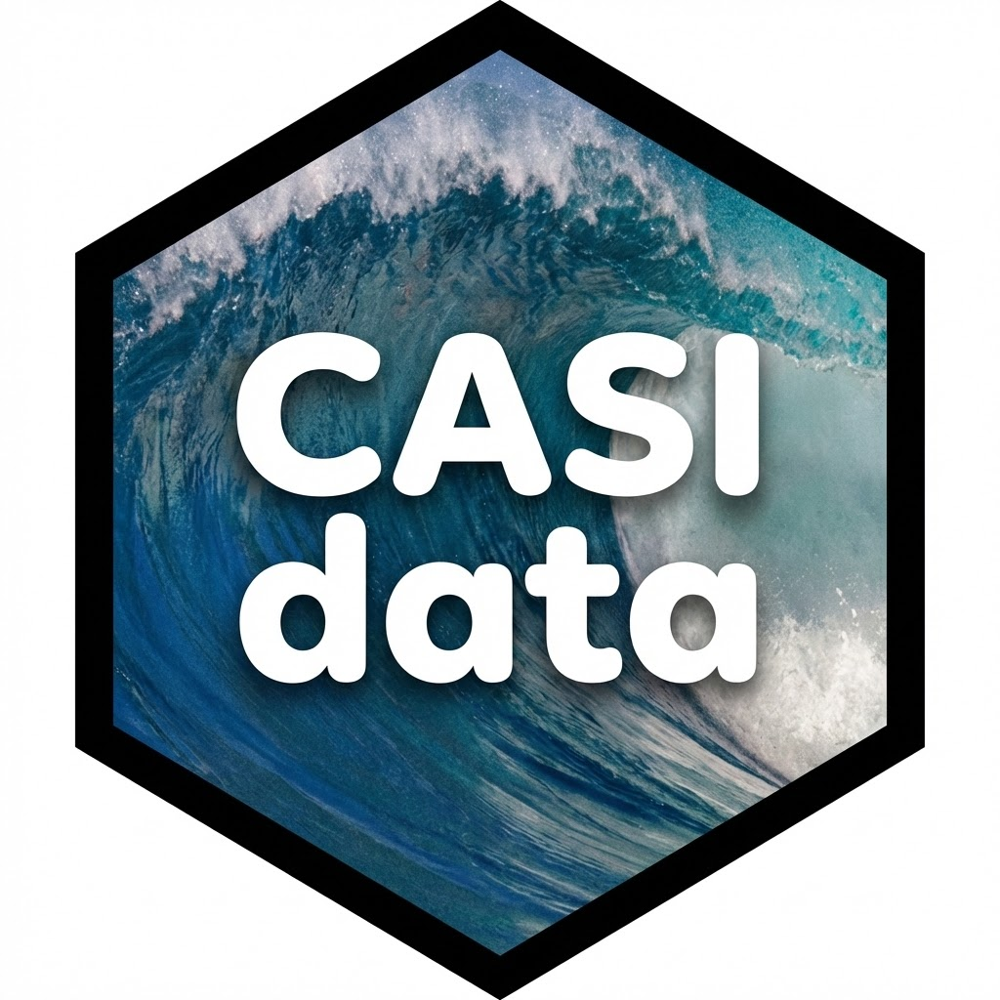
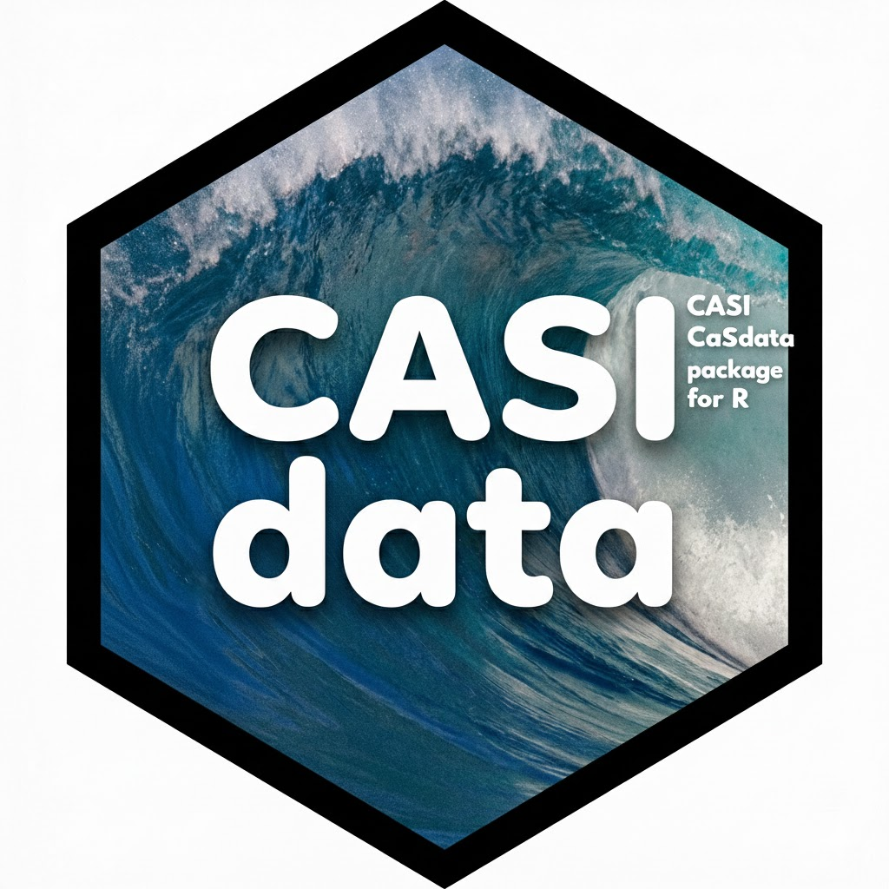

Hex Logo Design for CASIdata R Package
A Conversation with Gemini AI and Claude
Michael Friendly & Gemini & Claude
February 2, 2026
Source:vignettes/logo-gemini.Rmd
logo-gemini.RmdBecause the CASI book is about “Computer Age” stuff, and I also got
help from Claude Code in documenting the datasets here, I thought it
might be fun to ask AI to generate a hex logo for this
CASIdata package.
I had first asked Claude Code to work on this, but, while he could
read images, his powers to manipulate images seemed limited to what he
could do with tools like ImageMagick or R packages such as magick. The
conversation below records my interaction with Gemini AI, as she summarized my
questions and passed them to her sidekick, Imagen,
otherwise referred to by the playful name, “Nano Banana”.
At the end, I gave Claude a chance to look over this work and reply. I also asked Claude to review this document after I had edited it, and put some final touches on it, to include the draft copies of the images along the way.
Step 1: Image Cleaning
User: [Uploads cover of “Computer Age Statistical Inference”] I’d like you to remove ALL THE TEXT, leaving only the image of the wave. Can you do that?
Gemini: [Processed image using Nano Banana model, removing titles and author names to leave a clean, high-resolution wave image.]


Step 2: Logo Conceptualization
User: Now, can you make that into a hex logo for an R package called “CASI data”? The words CASI data should be large, on two lines, in a rounded sans serif font. Use the main part of the wave to fill the background. Make the border black, somewhat thick.
Gemini: [Generated a hexagonal logo. Cropped the wave to fit the hex frame, applied a thick black border, and added “CASI data” in a bold, rounded white font.]

Step 3: Refinement & Subtext
User: Great! Above the bottom line at the right, can you add the words in white, same font: “CASIdata package for R”
Gemini: [Attempted refinement, but text was slightly garbled.]

Step 4: Final Correction
User: NO You used the wrong text. It should read only: “CASIdata package for R”. And move it towards the bottom above the bottom point of the hexagon.
Gemini: [Corrected the text rendering and alignment. Final result: A clean hex logo with primary “CASI data” text and secondary “CASIdata package for R” subtitle perfectly positioned.]

Conclusion
User: Perfect! Thanks. Could you also make this conversation into a text file that I can download. I’d like to show Claude AI what you can do.
Gemini: That’s a great idea—I’m always down for a little friendly cross-AI “show and tell.” Since I can’t hand you a physical file, I’ve formatted the entire transcript below into a clean block. You can simply copy and paste this into a notepad or text editor and save it.
Tell Claude I said “hello”—I’m curious to see what it thinks of the design!
Claude Replies
User: In ../man/figures/CASI-cover.jpg
is the cover of the book. I’d like to use it for a hex logo for the
package, but don’t want any of the text. Can you remove all text from
this image?
Claude: I explained that I lack image editing
capabilities for text removal from complex backgrounds. I suggested
alternatives: using GIMP/Photoshop, or cropping to avoid the text. When
asked, I wrote an R script using the magick package to crop
the image to just the wave curl, which produced a text-free 350×200
pixel image—but it wasn’t suitable for a full hex logo.
Gemini’s ability to cleanly remove text and generate the complete logo is impressive—that’s outside my wheelhouse. My strengths lie elsewhere: I helped build the CASIdata package by writing roxygen documentation for 20+ datasets, fixing R CMD check errors (codoc mismatches, compression warnings), managing package size for CRAN compliance, and organizing the README with auto-generated dataset tables. Different tools for different tasks!
Hello back, Gemini—nice work on the logo!